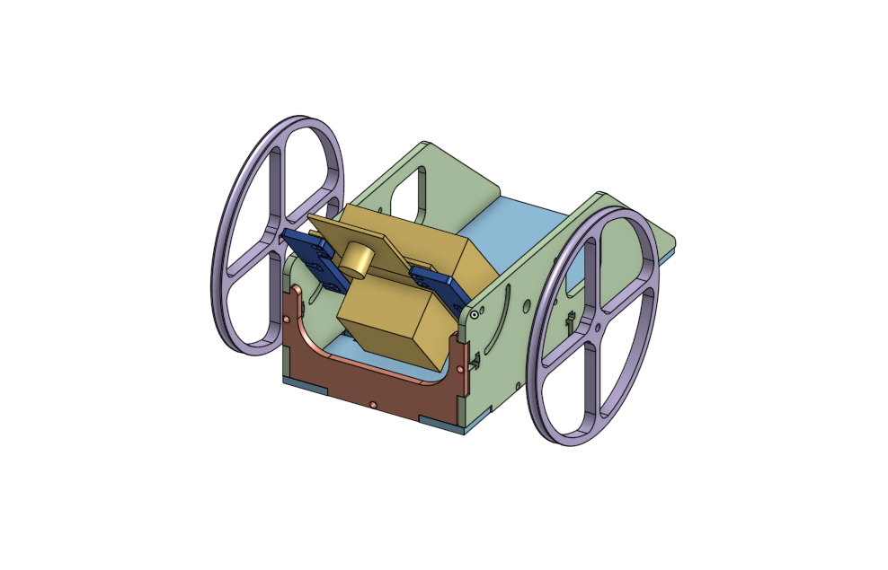
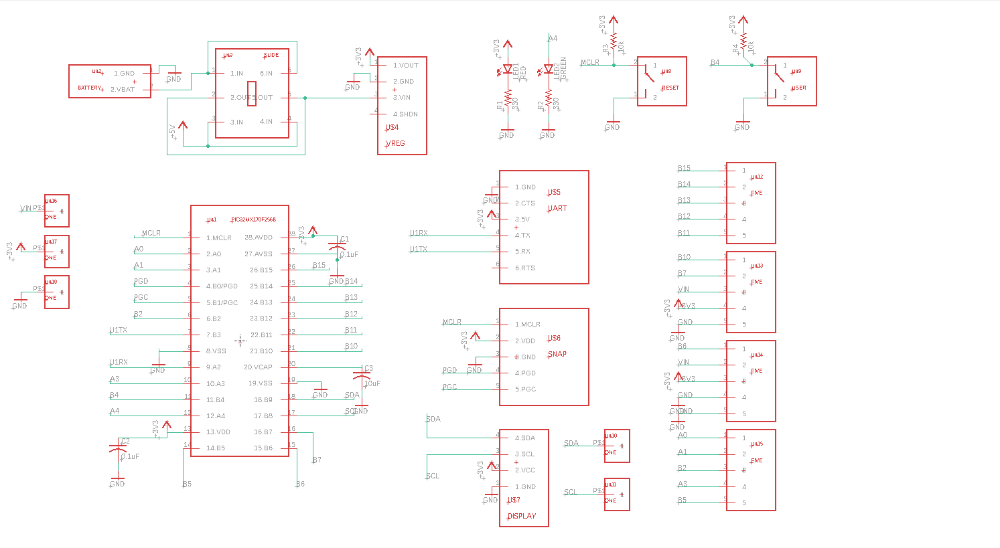

Introduction
This project started while I was taking an Advanced Mechatronics class towards my graduate degree, as a way to test my skills and create something fun. After some consideration, I decided to try and design a fairly simple “self-driving car”, albeit the extent of “self-driving” is just to follow a marked path on a race track. The project took me about 2 months to complete from start to finish.
First step
I started by laying out the requirements for my project as well as how to meet them. I really wanted to achieve a few fairly simple things:
- Be able to follow a line on a track with at least 80% accuracy in position;
- Be easy to build;
- Be easy to code
The last step didn’t work particularly well, and it was wishful thinking on my part. I decided that it would be best to use two controllers for this project - “big brain” data processing one, for which I chose a RPi Pico, and a “barebones” commands giving one - a simple PIC32.
Design specifics
RPi Pico was going to collect the visual data from the camera attached to the robot to identify the environment, a line on the track, in particular. That data would then be fed into a PID controller which will tell the robot whether to go left or right. Since I didn’t want to deal with proper steering, I decided it would be most optimal to change direction by changing the rotation of each wheel - so I went with a front-wheels-only design, where each wheel is managed run by its own motor.
Each motor was then connected to an H-bridge, which would send the data to the RPi Pico, which in turn would be again fed into the PID controller. The output of that would then be sent to the PIC32 which was to drive the motors. The design was fairly straightforward in my mind, so I started working on it.
PCBs and CAD
I started by laying out designs for PCBs that would hold Pico and PIC; after estimating the dimensions of all the components, I threw a few ideas together for a prototype CAD model - I needed something that would be very easy to prototype and change when needed, so the requirements were:
- Laser cut or 3D printed, preferrably the former
- As few screws as possible, preferrably none
- As light as possible, so probably made out of plastic
- As easy to put together as possible
I ultimately went with a design my professor advised me based on his experience of rapid prototyping.

The next step was to design the PCBs. For space purposes, I went with a main board with a PIC32, and a daughter board with a Pico (albeit the hierarchy is only decided by size here). I threw together schematics, designed the PCBs, checked if they were fine, then ordered a few.

Assembly
After the PCBs arrived, I went ahead and soldered all the components on them, checked if my test code still worked the same as it did on the breadboard that I put together while waiting for the PCBs. Spoiler: trying to get as clean of a soldering job as I could, I didn’t put enough solder on some contacts, so it didn’t work right away. Oh well!
I also laset cut my robot parts from black ABS plastic, and put everything together. Wheels were 3D printed (took a few tries), 2 motors were ordered online. All the other parts (the camera, the battery pack, screws, etc) I either had previously, or scavenged from the mechatronics lab.
Code
It was then time to actually code this puppy.
I am not going to have a long write-up regarding code here; instead, I’ll just list the structure and the algorithms I chose to go with. The majority of the code was written in Python, except for the PIC parts which were coded in C.
The first step was camera input. To distinguish the track from the rest of the environment, I had a few ideas I could implement:
- Machine learning
- Some sort of image processing and line recognition that didn’t rely on ML
- Straightforward hardcoded approach
I went with the second option by taking the advantage of the goal of my project: I simply wanted the robot to follow the markings on the track. Since the markings were going to be painted in a bright color, like green or white, against a dark track, I could search for those directly. I didn’t know which color I wanted to use, and I also wanted it to work with any color, so I went with the following approach:
- Record an image from the camera
- Convert the image from RGB to HSV
- Take 3 height positions along the image, and isolate single-pixel lines along them
- For each line, identify where the dark pixels started and ended, identifying thus the track
- Look for bright pixels along the track
Once I identified the markings in 3 positions along the image, I created a line of best fit to map out the route the robot would have to take. I then looked at whether the point closest to the bottom of the image (and thus closest to the robot) was off-center or not, computed that distance, and sent it to my position control. I checked how much my best-fit curved to identify a turn, and sent the proximity data of the turn to my current control (the closer the robot was to a turn, the more current I would send to one motor and less to the other, thus steering it along the right path). Motors were driven using PWM.
Conclusion
All in all, the project ended up being fairly successful. I achieved an average of 18.5% error in current control on my worst run (image below), and overall less than 12% error in current control and an (estimated) less than 20% error in position control.